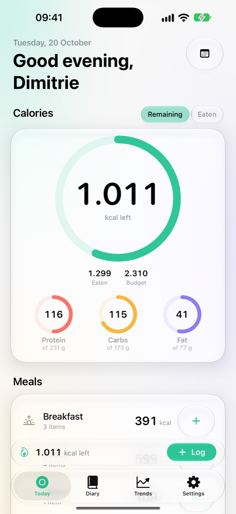
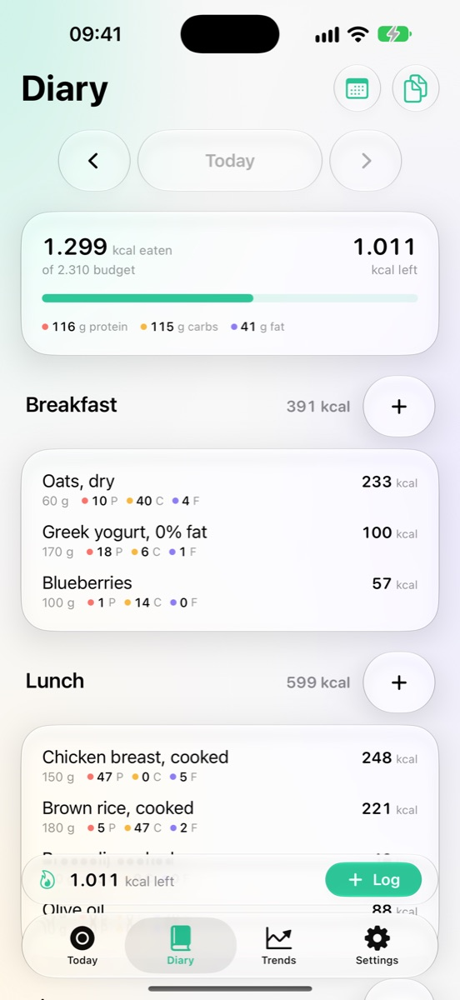
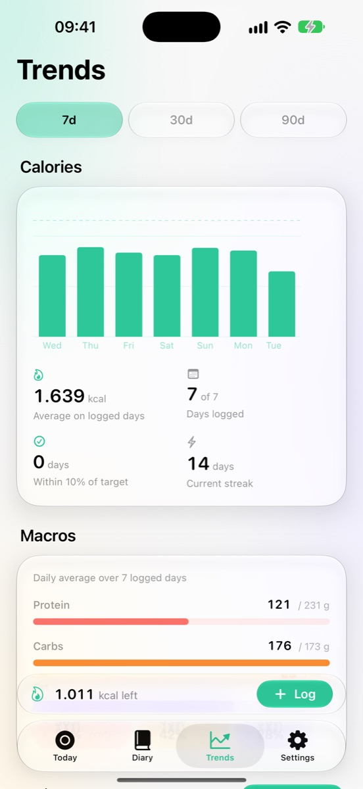

Nutrition tracking that stays out of your way.
A minimalist food, water and weight diary for iPhone. Log in seconds, see the day at a glance, and keep everything in Apple Health.
iOS 26 Apple Health iCloud Siri & Shortcuts ChatGPT plugin



What it does
- Log fast. Search millions of products from Open Food Facts, scan barcodes, reuse recents and favourites, build recipes, or quick-add calories.
- See the day. Calorie ring, macro rings, water, steps and active energy, per-meal totals.
- Personal targets. Computed from your body data, activity and goal, with macro presets or a custom split.
- Trends. Calories, macros, weight, water and activity over 7, 30 or 90 days, with streaks.
- Apple Health. Writes what you log, reads weight, steps and active energy. Deleting an entry removes exactly the samples it wrote.
- iCloud. Your diary, foods, recipes and targets follow you to your other devices. Weigh-ins stay in Health, never in iCloud.
- Siri and Shortcuts. "Log water in GPT Track", "How am I doing in GPT Track".
- ChatGPT plugin (optional). Pair the app with a companion server you run, and ChatGPT can log meals and answer "how am I doing today?".
Privacy in one sentence
GPT Track has no accounts, no analytics, no ads and no servers of its own: your data lives on your iPhone, in your Apple Health and in your private iCloud, and nowhere else unless you connect something yourself. Details in the privacy policy.
Open source
The app and the companion server are published under the MIT licence at github.com/AceDimi2005/GPT-Track.